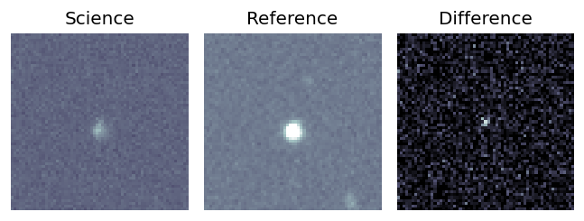
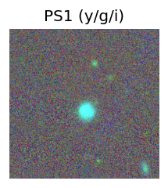
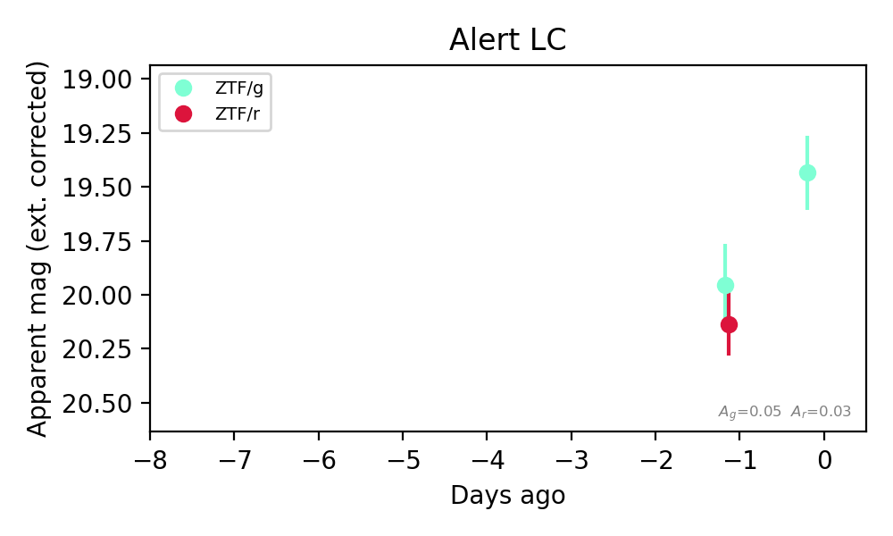

Candidate List 20261104Last night — ZTF: 1,252 passed basic cuts (20 young) · LSST: 0 passed basic cuts (0 young)Previous Day Next Day
Section 1: New Sources (age<1d) Section 2: Old (1-5d) sources observed last nightplaceholder
Section 1: New Afterglow/FBOT Cands Last Night (0)
Section 2: Older Sources Observed Last Night (2)
0. [ZTF] ZTF26acdwxtn (FBOT?) [Back to Top] [Share] [Trigger Swift] [Fritz Alert] [Fritz Source] [Lasair]RA, Dec: 100.94737, 69.42105 6h43m47.37s, 69d25m15.79sGalactic (l, b): 145.6628, 24.6106 ext(g-r) = 0.071

TESS: Sectors [19 20 60 73]
PS1: 0 sources in 3 arcsec
LegacySurvey: 1 sources in 3 arcsec Closest: d = 0.42 arcsec, 207.8 deg (east of north) photoz=0.16 (68% bounds 0.09, 0.26), type=DEV peak abs mag (ext. corrected) = -21.17 (68% bounds -19.79, -22.44)

Extinction-corrected gr color:
From alerts: -0.26 +/- 0.13 mag
Rise Rate:
g: 0.14 mag/day
r: 0.21 mag/day
Fade Rate:
1. [ZTF] ZTF26aceiyml (Afterglow?FBOT?) [Back to Top] [Share] [Trigger Swift] [Fritz Alert] [Fritz Source] [Lasair]RA, Dec: 184.01984, 58.89088 12h16m4.76s, 58d53m27.16sGalactic (l, b): 131.46443, 57.64779 ext(g-r) = 0.015

TESS: Sectors [ 15 22 41 48 75 120 121]
NED host (10 arcsec):Found WISEA J121604.73+585323.9 (G, 3.2″); NED spec-z: z=0.1289 [zflag SLS]; peak abs mag = -19.54
PS1: 0 sources in 3 arcsec
LegacySurvey: 1 sources in 3 arcsec Closest: d = 1.74 arcsec, 240.1 deg (east of north) photoz=0.13 (68% bounds 0.06, 0.37), type=REX peak abs mag (ext. corrected) = -19.64 (68% bounds -17.74, -22.09)

Extinction-corrected gr color:
From alerts: -0.18 +/- 0.24 mag
Consistent with synchrotron, g-r>0!
Rise Rate:
g: 0.53 mag/day
Fade Rate: